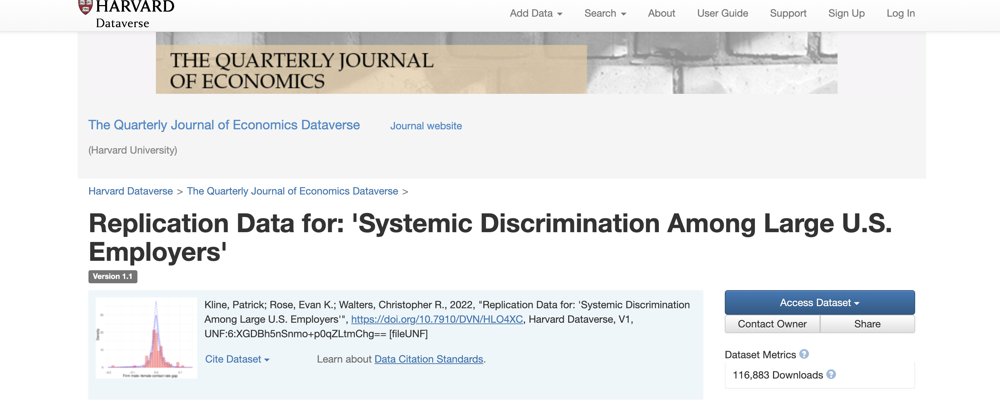
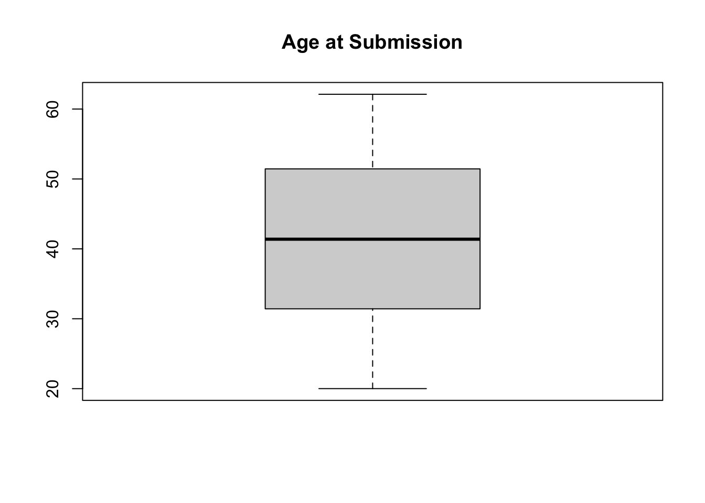
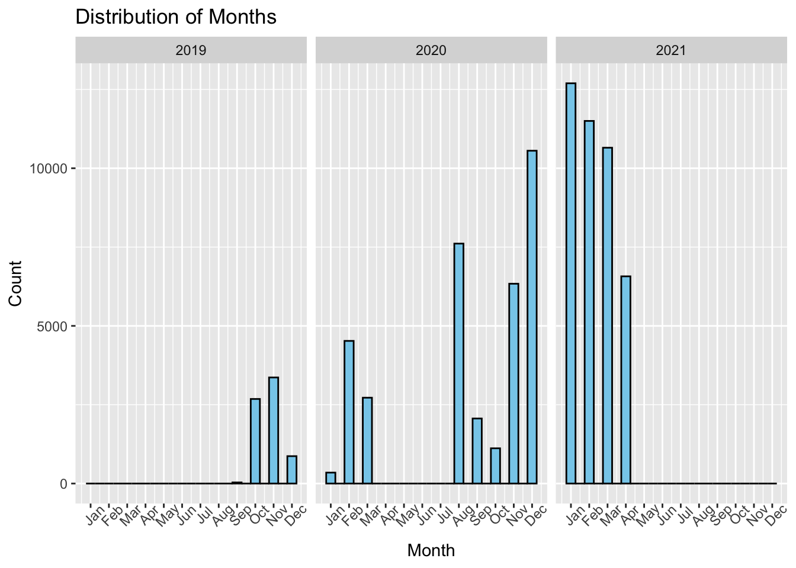
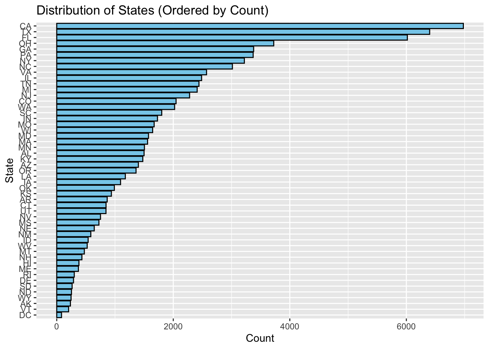
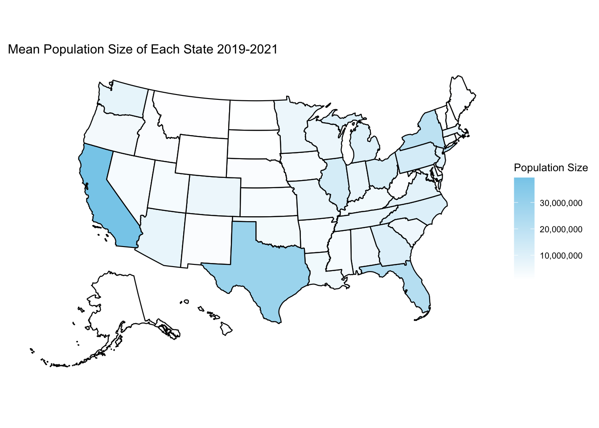
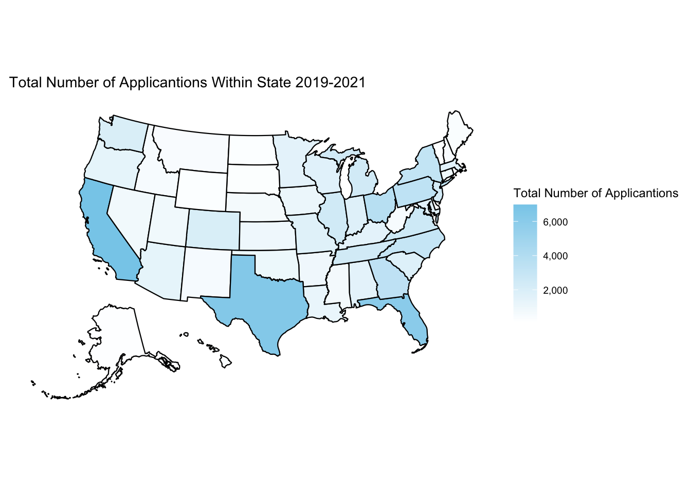

rm(list = ls())
# hide warnings
options(warn = -1)
suppressPackageStartupMessages(library(ggplot2))
suppressPackageStartupMessages(library(tidyverse))
suppressPackageStartupMessages(library(dplyr))
suppressPackageStartupMessages(library(stargazer))
suppressPackageStartupMessages(library(usmap)) # used for plotting US maps
data <- readRDS("dataset/cleaned_data.rds")
merged_data <- readRDS("dataset/merged_data_state_by_year.rds")Data
We describe the sources of our data and the cleaning process.

This comes from the original file data.qmd. This page details our data sources, the cleaning process, and provides initial diagnostic plots. For this project, we work with data from the landmark study Systemic Discrimination Among Large U.S. Employers (Kline, Rose, and Walters, 2022). The data was originally collected through a fake resume experiment to investigate patterns of hiring discrimination in large US employers, making it highly relevant to both current social justice issues and policy enforcement efforts.
Data Sources and Rationale
Experimental, Main Dataset
- Source: The dataset is available on Harvard Dataverse and was published alongside the study “Systemic Discrimination Among Large U.S. Employers”.
Link to original data source - Purpose: The data were collected to examine whether hiring discrimination is endemic to particular firms and to quantify the impact of factors such as race, gender, and age on callback rates.
- Why this Data: We selected this dataset because it not only addresses pressing issues of discrimination and equity but also includes rich information (e.g., date, location, and applicant demographics) that supports extensive exploratory and inferential analysis.
Census Population, Demographic Data
Source: The census data was obtained from the United States Census Bureau.
Link to census data and Link to census dataPurpose: The census data provides demographic information about the population in each state, which is essential for understanding the the size of the population in each state and how it relates to labor market dynamics.
Why this Data: The census data is crucial for contextualizing the experimental data, allowing us to compare relative submission versus the number of applications in the study. This enables us to assess the representativeness of the sample and to explore potential biases in the data.
Data Files and Variables
Experimental Dataset
The project focuses on a single dataset that was processed and saved as an RDS file (cleaned_data.rds). Some Key variables include:
age_at_sub: Age of the applicant at the time of submission.monthandyear: Date components of when applications were submitted.state: Geographic information about the submission.race: Race of the applicant.cb: Binary indicator for whether an applicant received a callback (1 = Yes, 0 = No).- Additional variables (e.g., gender, education, etc.) are available and grouped.
For a detailed account of variable definitions and transformations, please refer to our cleaning script.
Census Dataset
To see how we combine the census data with the application data, please refer to our census cleaning script
Data Cleaning Process

The raw data was imported, cleaned, and transformed using R. The cleaning process involved:
- Renaming variables and recoding factors for clarity.
- Removing duplicate and inconsistent entries.
- Aggregating multiple data files (if applicable) to produce the final cleaned dataset.
- Saving the cleaned dataset as an RDS file for efficient reloading in analyses.
For census data and aggregation, we follow the process below:
- Variables were renamed and factors recoded for clarity.
- Duplicate and inconsistent entries were eliminated.
- Individual application records were aggregated to the state level.
- The state-level application data was merged with census population counts to calculate the proportion of applications relative to state populations.
Diagnostic Plots
Below are some initial diagnostic plots generated from the cleaned dataset.
Importing the Cleaned Data
Check for outliers in Age at Submission

As defined by the authors, the age is uniformly distributed between 20 and 60. This plot confirms that there are no outliers in the age variable.
Check distribution of submissions throughout years

This histogram shows the distribution of applications by month and year. The data is aggregated by month and year, allowing us to see trends over time. Notably, data from 2020 March to June is missing, likely due to the COVID-19 pandemic. January 2021 shows the distribution mode, with a significant number of applications submitted during that month.
This histogram legitimizes the necessity of controlling for a wave of application in our analysis, as these time trends could be correlated with other variables.
Distribution of Submissions by State

In this plot, we can see that California has the highest number of applications, followed by Texas and Florida. This distribution is important for understanding the geographic representation of our sample and its implications for the analysis.
Geographic Distribution of Submissions Versus Population By State


The above two plots show the geographic distribution of applications and population size across states. The first plot shows the mean population size of each state from 2019 to 2021, while the second plot shows the total number of applications within each state during the same period.
The takeaway from these plots is that the relative number of applications across states largely reflects the size of the population in each state. In particular, states in the West, Northeast, and Southeast—regions known for having larger populations—consistently show higher application counts, aligning with the overall demographic distribution across the United States.